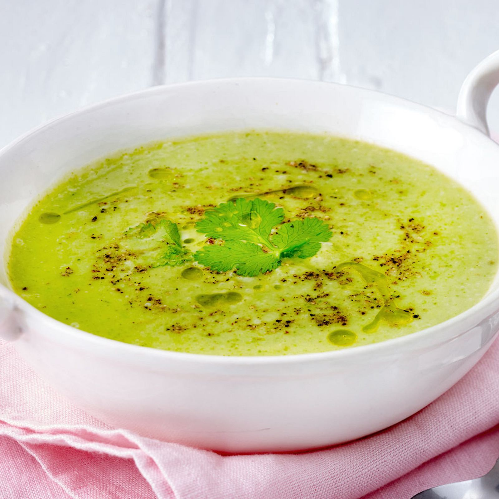

Zutaten:
- 400 g
- 1
- 1
- 1
- 500 ml
- 150 ml
- 30 ml
- etwas
- Zucchini
- Zwiebel
- Knoblauchzehe
- Kartoffel
- Gemüsebrühe
- Sahne
- Olivenöl
- Zitronensaft
- Salz
- Pfeffer
- Muskatnuss
Zubereitung:
- 1 Zwiebel und 1 Knoblauchzehe schälen und schneiden. 1 Kartoffel ebenfalls schälen und groc raspeln.
- 30 ml Olivenöl in einem Topf erhitzen und die Zwiebel, den Knoblauch und die Kartoffel darin glasig dünsten.
- 500 ml Gemüsebrühe dazugeben und bei mittlerer Hitze ca. 5 Minuten kochen lassen.
- in der Zwischenzeit 400g Zucchini in ca. 1cm große Würfel schneiden. Zucchiniwürfel dazugeben und weitere 10 min köcheln lassen.
- Suppe pürieren und 150ml Sahne hinzufügen. Mit Salz, Pfeffer, Muskatnuss und etwas Zitronensaft abschmecken.